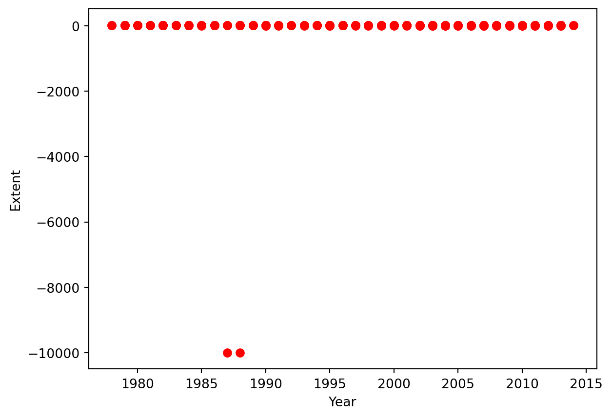
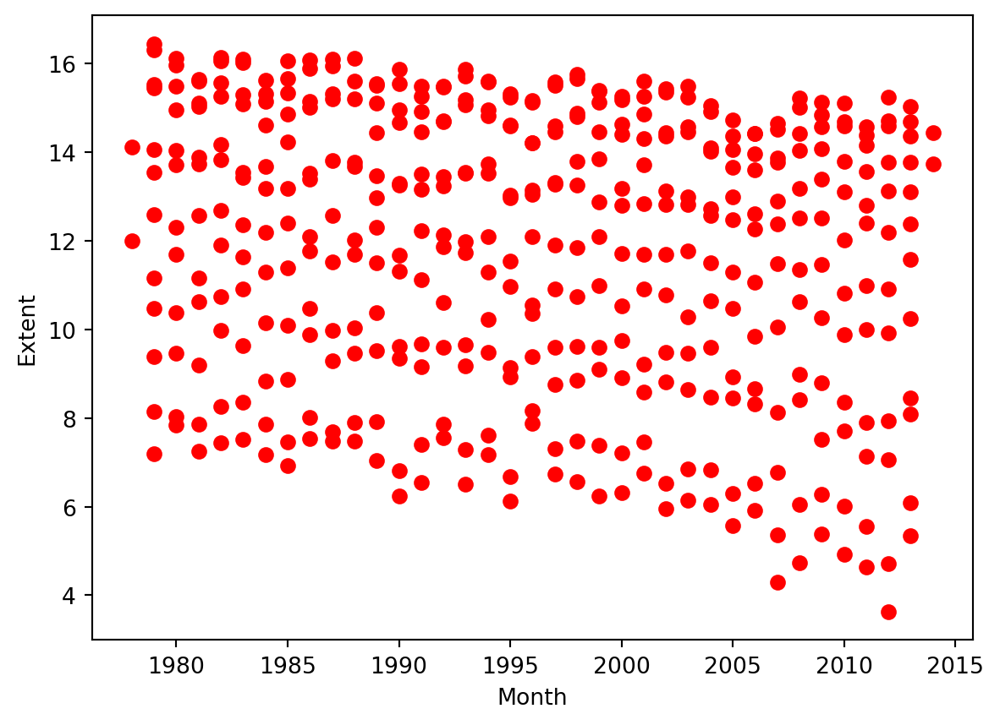
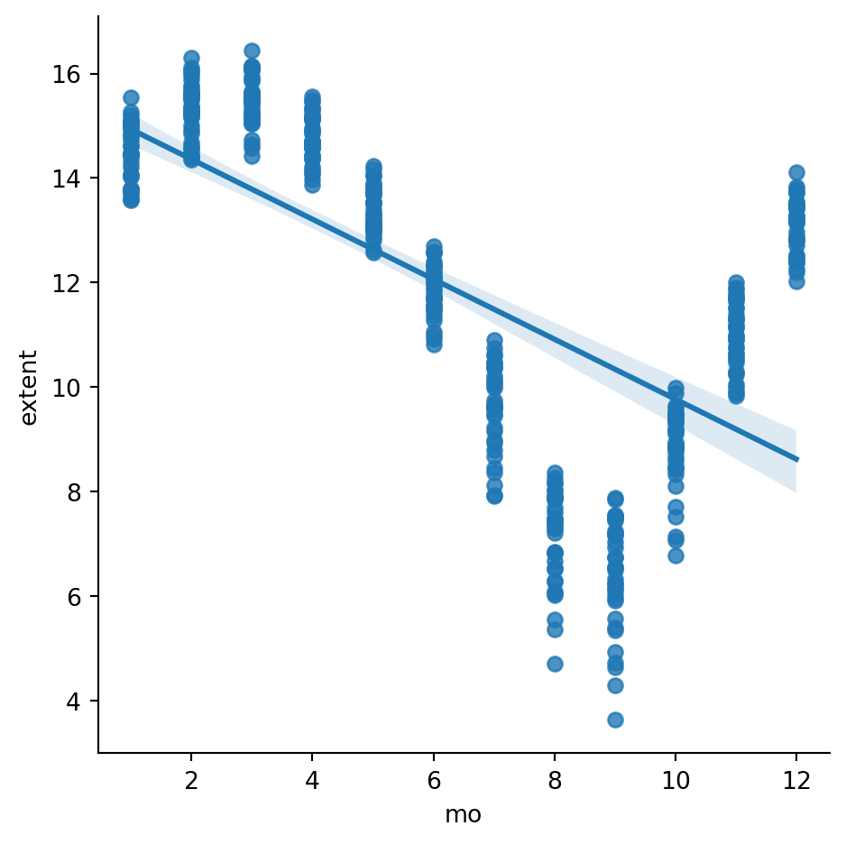
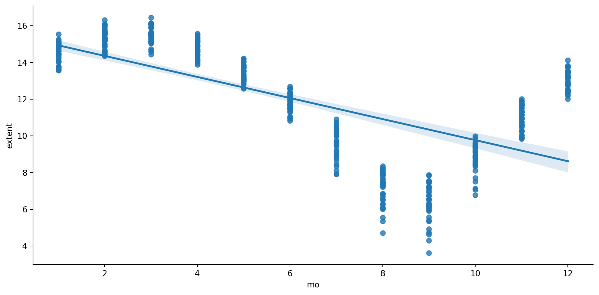

This notebook will walk you through an example of a simple linear regression and the other notebook “IM939 Lab 3 - Linear Regression Exercise.ipynb” will include the example of a multiple linear regression, too.
10.2 Simple and Multiple Linear Regression
In the linear model the response \(\textbf{y}\) depends linearly from the covariates \(\textbf{x}_i\).
In the simple linear regression, with a single variable, we described the relationship between the predictor and the response with a straight line. The general linear model: \[ \textbf{y} = a_0+ a_1 \textbf{x}_1 \]
The parameter \(a_0\) is called the constant term or the intercept.
In the case of multiple linear regression we extend this idea by fitting a m-dimensional hyperplane to our m predictors.
The \(a_i\) are termed the parameters of the model or the coefficients.
10.3 Ordinary Least Squares
Ordinary Least Squares (OLS) is the simplest and most common estimator in which the coefficients \(a\)’s of the simple linear regression: \(\textbf{y} = a_0+a_1 \textbf{x}\), are chosen to minimize the square of the distance between the predicted values and the actual values.
This expression is often called sum of squared errors of prediction (SSE).
10.4 Case study: Climate Change and Sea Ice Extent
The question: Has there been a decrease in the amount of ice in the last years?
10.4.1 Reading Data
There are five steps. First, let’s load the data that is already in the data folder: SeaIce.txt. It is a text file, specifically is a Tab separated file where each Tab delimites the following columns:
Year: 4-digit year
mo: 1- or 2-digit month
data_type: Input data set (Goddard/NRTSI-G)
region: Hemisphere that this data covers (N: Northern; S: Southern)
extent: Sea ice extent in millions of square km
area: Sea ice area in millions of square km
Once we upload the data, we can create a DataFrame1 using Pandas.
import pandas as pdice = pd.read_csv('data/raw/SeaIce.txt', delim_whitespace=True)print('shape:', ice.shape) #this returns number of rows and columns in a datasetice.head()
shape: (424, 6)
year
mo
data_type
region
extent
area
0
1979
1
Goddard
N
15.54
12.33
1
1980
1
Goddard
N
14.96
11.85
2
1981
1
Goddard
N
15.03
11.82
3
1982
1
Goddard
N
15.26
12.11
4
1983
1
Goddard
N
15.10
11.92
We can compute the mean for that interval of time (1981 through 2010), before data cleaning.
ice.mean(numeric_only =True)
year 1996.000000
mo 6.500000
extent -35.443066
area -37.921108
dtype: float64
Did we receive a negative mean…?
10.4.2 Data visualisation to explore data
Do you remember Seaborn? We will use lmplot() function from Seaborn to explore linear relationship of different forms, e.g. relationship between the month of the year (variable) and extent (responses):
import matplotlib.pyplot as pltimport numpy as npimport pandas as pdimport seaborn as sns
# Visualize the datax = ice.yeary = ice.extentplt.scatter(x, y, color ='red')plt.xlabel('Year')plt.ylabel('Extent')
Text(0, 0.5, 'Extent')

We detect some outlier or missing data. we are going to use function np.unique and find the unique elements of an array.
?np.unique
print ('Different values in data_type field:', np.unique(ice.data_type.values)) # there is a -9999 value!
Different values in data_type field: ['-9999' 'Goddard' 'NRTSI-G']
Let’s see what type of data we have, other than the ones printed above
year mo data_type region extent area
9 1988 1 -9999 N -9999.0 -9999.0
397 1987 12 -9999 N -9999.0 -9999.0
Data cleaning: we checked all the values and notice -9999 values in data_type field which should contain ‘Goddard’ or ‘NRTSI-G’ (some type of input dataset). So we clean them by removing these instances
# We can easily clean the data now:ice2 = ice[ice.data_type !='-9999']print ('shape:', ice2.shape)# And repeat the plotx = ice2.yeary = ice2.extentplt.scatter(x, y, color ='red')plt.xlabel('Month')plt.ylabel('Extent')
shape: (422, 6)
Text(0, 0.5, 'Extent')

sns.lmplot(data = ice2, x ="mo", y ="extent")

Above you can see ice extent data by month. You can see a monthly fluctuation of the sea ice extent, as would be expected for the different seasons of the year. In order to run regression, and avoid this fluctuation we can normalize data. This will let us see the evolution of the extent over the years.
10.4.3 Normalization
The lmplot() function from the Seaborn module is intended for exploring linear relationships of different forms in multidimensional datesets. Input data must be in a Pandas DataFrame. To plot them, we provide the predictor and response variable names along with the dataset
sns.lmplot(ice2, x ="mo", y ="extent", height =5.2, aspect =2);# Uncomment below to save the resulting plot.#plt.savefig("figs/CleanedByMonth.png", dpi = 300, bbox_inches = 'tight')

# Compute the mean for each month.grouped = ice2.groupby('mo')month_means = grouped.extent.mean()month_variances = grouped.extent.var()print ('Means:', month_means)print ('Variances:',month_variances)
To capture variation per month, we can compute mean for the i-th interval of time (using 1979-2014) and subtract it from the set of extent values for that month . This can be converted to a relative pecentage difference by dividing it by the total avareage (1979-2014) and multiplying by 100.
# Data normalizationfor i inrange(12): ice2.extent[ice2.mo == i+1] =100*(ice2.extent[ice2.mo == i+1] - month_means[i+1])/month_means.mean().copy()sns.lmplot(ice2 , x ="mo", y ="extent", height =5.2, aspect =2);plt.savefig("figs/IceExtentNormalizedByMonth.png", dpi =300, bbox_inches ='tight')
/var/folders/7v/zl9mv52s3ls94kntlt_l9ryh0000gq/T/ipykernel_5686/751478846.py:3: SettingWithCopyWarning:
A value is trying to be set on a copy of a slice from a DataFrame
See the caveats in the documentation: https://pandas.pydata.org/pandas-docs/stable/user_guide/indexing.html#returning-a-view-versus-a-copy
ice2.extent[ice2.mo == i+1] = 100*(ice2.extent[ice2.mo == i+1] - month_means[i+1])/month_means.mean().copy()
/var/folders/7v/zl9mv52s3ls94kntlt_l9ryh0000gq/T/ipykernel_5686/751478846.py:3: SettingWithCopyWarning:
A value is trying to be set on a copy of a slice from a DataFrame
See the caveats in the documentation: https://pandas.pydata.org/pandas-docs/stable/user_guide/indexing.html#returning-a-view-versus-a-copy
ice2.extent[ice2.mo == i+1] = 100*(ice2.extent[ice2.mo == i+1] - month_means[i+1])/month_means.mean().copy()
/var/folders/7v/zl9mv52s3ls94kntlt_l9ryh0000gq/T/ipykernel_5686/751478846.py:3: SettingWithCopyWarning:
A value is trying to be set on a copy of a slice from a DataFrame
See the caveats in the documentation: https://pandas.pydata.org/pandas-docs/stable/user_guide/indexing.html#returning-a-view-versus-a-copy
ice2.extent[ice2.mo == i+1] = 100*(ice2.extent[ice2.mo == i+1] - month_means[i+1])/month_means.mean().copy()
/var/folders/7v/zl9mv52s3ls94kntlt_l9ryh0000gq/T/ipykernel_5686/751478846.py:3: SettingWithCopyWarning:
A value is trying to be set on a copy of a slice from a DataFrame
See the caveats in the documentation: https://pandas.pydata.org/pandas-docs/stable/user_guide/indexing.html#returning-a-view-versus-a-copy
ice2.extent[ice2.mo == i+1] = 100*(ice2.extent[ice2.mo == i+1] - month_means[i+1])/month_means.mean().copy()
/var/folders/7v/zl9mv52s3ls94kntlt_l9ryh0000gq/T/ipykernel_5686/751478846.py:3: SettingWithCopyWarning:
A value is trying to be set on a copy of a slice from a DataFrame
See the caveats in the documentation: https://pandas.pydata.org/pandas-docs/stable/user_guide/indexing.html#returning-a-view-versus-a-copy
ice2.extent[ice2.mo == i+1] = 100*(ice2.extent[ice2.mo == i+1] - month_means[i+1])/month_means.mean().copy()
/var/folders/7v/zl9mv52s3ls94kntlt_l9ryh0000gq/T/ipykernel_5686/751478846.py:3: SettingWithCopyWarning:
A value is trying to be set on a copy of a slice from a DataFrame
See the caveats in the documentation: https://pandas.pydata.org/pandas-docs/stable/user_guide/indexing.html#returning-a-view-versus-a-copy
ice2.extent[ice2.mo == i+1] = 100*(ice2.extent[ice2.mo == i+1] - month_means[i+1])/month_means.mean().copy()
/var/folders/7v/zl9mv52s3ls94kntlt_l9ryh0000gq/T/ipykernel_5686/751478846.py:3: SettingWithCopyWarning:
A value is trying to be set on a copy of a slice from a DataFrame
See the caveats in the documentation: https://pandas.pydata.org/pandas-docs/stable/user_guide/indexing.html#returning-a-view-versus-a-copy
ice2.extent[ice2.mo == i+1] = 100*(ice2.extent[ice2.mo == i+1] - month_means[i+1])/month_means.mean().copy()
/var/folders/7v/zl9mv52s3ls94kntlt_l9ryh0000gq/T/ipykernel_5686/751478846.py:3: SettingWithCopyWarning:
A value is trying to be set on a copy of a slice from a DataFrame
See the caveats in the documentation: https://pandas.pydata.org/pandas-docs/stable/user_guide/indexing.html#returning-a-view-versus-a-copy
ice2.extent[ice2.mo == i+1] = 100*(ice2.extent[ice2.mo == i+1] - month_means[i+1])/month_means.mean().copy()
/var/folders/7v/zl9mv52s3ls94kntlt_l9ryh0000gq/T/ipykernel_5686/751478846.py:3: SettingWithCopyWarning:
A value is trying to be set on a copy of a slice from a DataFrame
See the caveats in the documentation: https://pandas.pydata.org/pandas-docs/stable/user_guide/indexing.html#returning-a-view-versus-a-copy
ice2.extent[ice2.mo == i+1] = 100*(ice2.extent[ice2.mo == i+1] - month_means[i+1])/month_means.mean().copy()
/var/folders/7v/zl9mv52s3ls94kntlt_l9ryh0000gq/T/ipykernel_5686/751478846.py:3: SettingWithCopyWarning:
A value is trying to be set on a copy of a slice from a DataFrame
See the caveats in the documentation: https://pandas.pydata.org/pandas-docs/stable/user_guide/indexing.html#returning-a-view-versus-a-copy
ice2.extent[ice2.mo == i+1] = 100*(ice2.extent[ice2.mo == i+1] - month_means[i+1])/month_means.mean().copy()
/var/folders/7v/zl9mv52s3ls94kntlt_l9ryh0000gq/T/ipykernel_5686/751478846.py:3: SettingWithCopyWarning:
A value is trying to be set on a copy of a slice from a DataFrame
See the caveats in the documentation: https://pandas.pydata.org/pandas-docs/stable/user_guide/indexing.html#returning-a-view-versus-a-copy
ice2.extent[ice2.mo == i+1] = 100*(ice2.extent[ice2.mo == i+1] - month_means[i+1])/month_means.mean().copy()
/var/folders/7v/zl9mv52s3ls94kntlt_l9ryh0000gq/T/ipykernel_5686/751478846.py:3: SettingWithCopyWarning:
A value is trying to be set on a copy of a slice from a DataFrame
See the caveats in the documentation: https://pandas.pydata.org/pandas-docs/stable/user_guide/indexing.html#returning-a-view-versus-a-copy
ice2.extent[ice2.mo == i+1] = 100*(ice2.extent[ice2.mo == i+1] - month_means[i+1])/month_means.mean().copy()
We can also compute the trend as a simple linear regression (OLS) and quantitatively evaluate it.
For that we use using Scikit-learn, library that provides a variety of both supervised and unsupervised machine learning techniques. Scikit-learn provides an object-oriented interface centered around the concept of an Estimator. The Estimator.fit method sets the state of the estimator based on the training data. Usually, the data is comprised of a two-dimensional numpy array \(X\) of shape (n_samples, n_predictors) that holds the so-called feature matrix and a one-dimensional numpy array \(\textbf{y}\) that holds the responses. Some estimators allow the user to control the fitting behavior. For example, the sklearn.linear_model.LinearRegression estimator allows the user to specify whether or not to fit an intercept term. This is done by setting the corresponding constructor arguments of the estimator object. During the fitting process, the state of the estimator is stored in instance attributes that have a trailing underscore (’’). For example, the coefficients of a LinearRegression estimator are stored in the attribute coef.
Estimators that can generate predictions provide a Estimator.predict method. In the case of regression, Estimator.predict will return the predicted regression values, \(\hat{\textbf{y}}\).
We can evaluate the model fitting by computing the mean squared error (\(MSE\)) and the coefficient of determination (\(R^2\)) of the model. The coefficient \(R^2\) is defined as \((1 - \textbf{u}/\textbf{v})\), where \(\textbf{u}\) is the residual sum of squares \(\sum (\textbf{y} - \hat{\textbf{y}})^2\) and \(\textbf{v}\) is the regression sum of squares \(\sum (\textbf{y} - \bar{\textbf{y}})^2\), where \(\bar{\textbf{y}}\) is the mean. The best possible score for \(R^2\) is 1.0: lower values are worse. These measures can provide a quantitative answer to the question we are facing: Is there a negative trend in the evolution of sea ice extent over recent years?
We can also estimate the extent value for 2025. For that we use the function predict of the model.
X = np.array(2025) y_hat = model.predict(X.reshape(-1, 1))j =1# January# Original value (before normalization)y_hat = (y_hat*month_means.mean()/100) + month_means[j]print ("Prediction of extent for January 2025 (in millions of square km):", y_hat)
Prediction of extent for January 2025 (in millions of square km): [[13.14449923]]
/Users/u2071219/anaconda3/envs/IM939/lib/python3.11/site-packages/sklearn/base.py:464: UserWarning: X does not have valid feature names, but LinearRegression was fitted with feature names
warnings.warn(
Prediction of extent for January 2025 (in millions of square km): [ 13.14449923]
Igual, Laura, and Santi Seguí. 2017. “Regression Analysis.” In Introduction to DataScience: APythonApproach to Concepts, Techniques and Applications, 97–114. Cham: Springer International Publishing. https://doi.org/10.1007/978-3-319-50017-1_6.